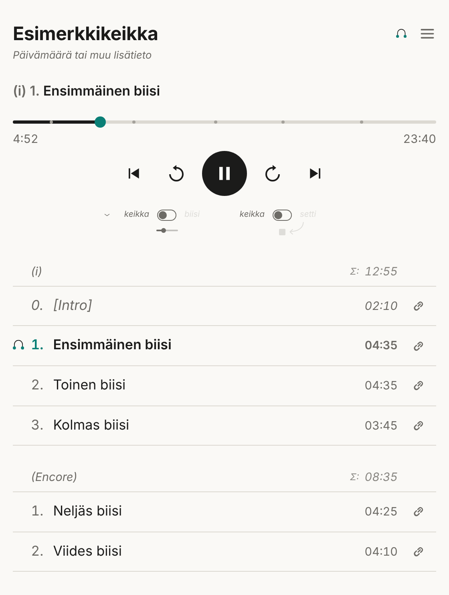

Keikkasoitin – käyttöopas
Uuden keikan teko, linkit ja soittimen käyttö. Kerran tehtävä asennus omalle Cloudflare-tilille on omalla sivullaan: käyttöönotto.
Uusi keikka
- Äänitiedosto Google Driveen tai Dropboxiin ja jakolinkki:
- Drive: tiedoston kohdalla Jaa → Yleinen käyttöoikeus: Kaikki, joilla on linkki → Kopioi linkki.
- Dropbox: Jaa → Kopioi linkki (asetus: kuka tahansa linkin saanut voi katsoa).
- Avaa apusivun kirjanmerkki. Yläreunassa pitää lukea Omat asetukset.
- Täytä kentät: otsikko, äänitiedoston linkki ja biisilista. Apusivu muuttaa Drive- ja Dropbox-linkin soitettavaan muotoon itse (Äänitiedosto). Kenttä Päivämäärä tai muuta lisätietoa on vapaaehtoinen; se näkyy soittimessa otsikon alla. Tarkista kohdan Tarkista lista esikatselu.
- Kopioi komento → liitä Terminaliin → Enter. Ensimmäinen vastausrivi sisältää
"success":true, ja sen alla tulostuvat tallennetut keikan tiedot. - Kopioi linkki ja avaa se itse ensin (Avaa soitin). Jos soitin sanoo heti tallennuksen jälkeen Keikkaa ei löytynyt, odota minuutti ja lataa uudelleen: Cloudflare jakaa tallennuksen maailmalle viiveellä.
Apusivu ei lähetä mitään verkkoon. Keikka tallentuu vasta, kun ajat komennon Terminalissa.
Biisilista
Yksi kappale riville: alkuaika äänitiedostossa ja nimi. Esimerkki kahden setin keikasta:
[Intro] 2:10 Ensimmäinen biisi 6:45 Toinen biisi 11:20 Kolmas biisi --- (Encore) 15:05 Neljäs biisi 19:30 Viides biisi
Soittimessa tämä näyttää tältä.
| Kirjoitat | Soittimessa |
|---|---|
3:42 Nimi, Nimi 3:42 tai 1:02:30 Nimi |
Kappale alkaa kohdasta 3:42 tai 1:02:30. Rivin alun numero (1.) ja välimerkit
(Nimi – 3:42, Nimi (3:42)) saavat olla mukana. Ajat kasvavat
rivi riviltä. |
Pelkkä 3:42, 3:42 [Nimi], 3:42 [x] Nimi tai
3:42 [x] ([0] käy [x]:n sijaan) |
Raita, joka ei ole biisi (esim. intro, spiikki tai aplodit), missä kohtaa tahansa. Sillä ei ole numeroa, eikä numerointi etene. Ilman nimeä se on setin alussa [INTRO], lopussa [OUTRO] ja välissä [VÄLI]; peräkkäiset numeroidaan ([OUTRO 1], [OUTRO 2]). Listan ensimmäiseltä riviltä ajan saa jättää pois (alkaa 0:00). |
| Ensimmäinen raita alkaa myöhemmin kuin 0:00 | Alkuun tulee itsestään [INTRO]. |
3. 3:42 (rivinumero ja aika) |
Kappale ilman nimeä; soitin näyttää sen numeron. |
--- |
Uusi setti. Numerointi alkaa taas 1:stä. Setin ensimmäisellä raidalla pitää olla alkuaika. |
(Encore) heti ----rivin jälkeen |
Setin oma otsikko. Ilman sitä setit ovat (i), (ii) … Listan alussa sulkurivi nimeää ensimmäisen setin. |
| Audacityn Export Labels -tiedosto | Sisällön voi liittää sellaisenaan. |
| Logicin markerilista | Liitä sellaisenaan: avaa markerilista (List Editors → Marker), klikkaa jotain markeria, valitse listan omasta View-valikosta Show Event Position and Length as Time ja paina Cmd-A ja Cmd-C. Logicin tunnin siirtymä (01:00:00:00) poistetaan itsestään. Tee markerit komennolla Create Marker without rounding: tavallinen Create Marker siirtää markerin seuraavaan tahtiin. Nimeämätön Marker 3 on biisi ilman nimeä. |
| Reaperin markerit (SWS-laajennus) | SWS:n Marker listissä oikea klikkaus → Export format… → mt d, sitten
Export formatted marker list to clipboard ja liitä. |
Markeri nimeltä --- (tai --- (Encore)) |
Uusi setti, kuten ----rivi. Markerin aika ei merkitse mitään. |
Jos rivissä on virhe, apusivu kertoo rivin numeron punaisella eikä tee komentoa ennen kuin se on korjattu.
Äänitiedosto
Keikka on yksi äänitiedosto; biisilista merkitsee siihen kappaleiden alkukohdat. Soitin käyttää selaimen omaa äänitoistoa, joten tiedostomuoto ratkaisee, soiko keikka kuulijan laitteessa.
- AAC (
.m4a) on toiminut kokeiluissa parhaiten. Suosi sitä. - MP3 soi kaikissa yleisissä selaimissa, myös iPhonen Safarissa.
- WAV soi yleensä, mutta keikan mittainen tiedosto on satoja megatavuja ja latautuu hitaasti puhelimeen.
- FLAC, Ogg ja Opus: tuki vaihtelee selaimen ja iPhonen version mukaan. Älä käytä niitä jaettavassa keikassa.
Drive: Google ei anna soittaa Drive-tiedostoa suoraan toiselta sivustolta, joten soitin hakee sen workerisi kautta. Apusivu tekee tämän itse, kun liität Drive-linkin. Workerin koodin pitää olla päivitetty 14.10.2026 tai myöhemmin (Workerin päivitys).
Molemmat on kokeiltu toimiviksi. Dropbox-tiedosto soi suoraan Dropboxista, Drive-tiedosto yhden välivaiheen kautta, joten Dropbox voi periaatteessa toimia hieman jouheammin. Jos toisto alkaa tai kelaus tuntuu Drivella hitaalta, Dropbox on vaihtoehto.
Korjaus ja poisto
Korjaus: liitä keikan linkki apusivun Tunnus-kenttään ja paina Hae.
Apusivu poimii linkistä keikan tunnuksen (…/soitin/#k7f3qa2m@soitin.jotain);
pelkän tunnuksen voi myös kirjoittaa.
Keikan tiedot tulevat kenttiin. Korjaa, kopioi uusi komento ja aja se. Linkki pysyy samana.
Äänitiedoston vaihto: korjaa keikka uudella jakolinkillä.
Poisto: Cloudflaressa Workers
KV → soitin → avain gig:tunnus → poista. Jos haluat vain lopettaa
kuuntelun, voit myös poistaa jakolinkin Drivesta tai Dropboxista.
Linkit
- Keikan linkki:
https://ollijuutilainen.github.io/soitin/#tunnus@soitin.jotain. Kuka tahansa, jolla on linkki, voi kuunnella keikan. Linkki on siis avain; jaa se vain niille, joille keikka on tarkoitettu. - Kappaleen linkki: soittimen biisilistan
-napit
kopioivat linkin suoraan kappaleeseen (
…@soitin.jotain/3; useamman setin keikassa toisen setin kolmas kappale on…/2/3). Linkki avaa soittimen kappaleen alkuun.
Soittimen käyttö

| Kohta | Toiminto |
|---|---|
| Otsikko ja lisätieto | Keikan nimi ja sen alla harmaana vapaaehtoinen lisätieto. |
| Nyt soi -rivi | Soivan kappaleen numero ja nimi. Useamman setin keikassa edessä on setti, esim. (ii) 3. |
| Aikajana | Napauta tai vedä kohtaan. Pienet pystyviivat ovat kappaleiden rajoja (keikka-janalla). Alla vasemmalla soittokohta, oikealla janan pituus. |
| Edellinen, seuraava | Edellinen kappale tai seuraava kappale. Jos kappale on soinut yli 3 sekuntia, edellinen-nappi palaa ensin saman kappaleen alkuun. |
| 15 s taakse, eteen | Hyppy 15 sekuntia. Hyppy voi ylittää kappaleen rajan. |
| Kytkin keikka / biisi | keikka: aikajana on koko keikka. biisi: aikajana on vain soiva kappale, joten pitkässä keikassa kelaus kappaleen sisällä on tarkempaa. |
| Kytkin keikka / setti | Vain useamman setin keikassa. setti: toisto pysähtyy setin loppuun ja jää seuraavan setin alkuun; keikka-janalla pysähdyskohta näkyy korostettuna viivana. Toista-nappi jatkaa seuraavasta setistä. keikka: soi loppuun asti. |
| Kappalelista | Napauta kappaletta, niin soitto alkaa siitä. Oikealla kappaleen kesto, setin otsikkorivillä setin biisien yhteiskesto (Σ, ilman hakasulkeissa olevia ei-biisejä). Linkki-ikoni kopioi kappaleen linkin. |
Näppäimistöllä (Mac): välilyönti toistaa ja tauottaa. Kun aikajana on valittuna (Tab), ← → siirtävät 5 sekuntia, PgUp PgDn 30 sekuntia ja Home End janan alkuun ja loppuun.
iPhone
Soitin on verkkosivu, joten erillistä sovellusta ei tarvita. Avaa keikan linkki Safarissa ja lisää se halutessasi kotinäyttöön (Jaa → Lisää Koti-valikkoon). Soitin antaa lukitusnäytölle kappaleen nimen ja ohjaimet: tauko, edellinen ja seuraava kappale.
Soitin on kokeiltu Macin Safarissa ja Androidilla usealla selaimella, iPhonella ei vielä (käyttöönoton kohta 9).
Ongelmatilanteet
| Soitin näyttää | Syy ja korjaus |
|---|---|
| Linkistä puuttuu keikan tunnus | Linkki on kopioitunut vajaana. Kopioi se kokonaan, myös #-merkin jälkeinen osa. |
| Keikkaa ei löytynyt | Heti tallennuksen jälkeen: odota minuutti. Muuten tunnus on väärin, komento jäi ajamatta tai keikka on poistettu. |
| Keikan tietojen haku epäonnistui | Verkko ei toimi, tai linkin @-osa on väärin. |
| Keikan tietoja ei saatu palvelimelta | Workerin asetuksissa on vika. Käyttöönotto-ohje. |
| Kappalelistassa on virhe | Tallennetussa listassa on virheellinen aika. Hae keikka apusivulle, korjaa ja tallenna. |
| Äänitiedoston lataaminen epäonnistui | Jakolinkki on poistettu tai väärä, tai tiedostoa ei ole jaettu kaikille linkin saaneille. Tee jako uudelleen ja korjaa keikka. Ilmoituksen alla oleva selitys tarkentaa syytä. |
| Soi Macilla mutta ei iPhonella | Tiedostomuoto. Käytä AAC:ta tai MP3:a (Äänitiedosto). |
Liite: keikka kansiosta (lisäominaisuus)
Tavallinen keikka ei tarvitse mitään tästä liitteestä. Kansiokeikassa jokainen kappale on oma äänitiedostonsa, ja keikaksi annetaan jaettu kansio Google Drivesta tai Dropboxista. Soitin soittaa kansion äänitiedostot peräkkäin, ja kappaleiden nimet tulevat tiedostonimistä. Biisilistaa ei kirjoiteta. Ensin workeriin tarvitaan Googlen tai Dropboxin avain: käyttöönotto-ohjeen liite.
Kansion sisältö
- Numeroi tiedostot:
01 Ensimmäinen biisi.mp3,02 Toinen biisi.mp3…10 …. Järjestys menee numeron mukaan (2 ennen 10:tä), ja alkunumero jää pois kappaleen nimestä. Alaviivat muuttuvat välilyönneiksi.00 [Intro].mp3ja07 [x] Spiikki.mp3ovat ei-biisejä kuten biisilistassakin. Numeroi aina: ilman numeroa nimen alussa oleva luku katoaa (99 Luftballons.mp3→ Luftballons). - Setit ovat alikansioita nimen mukaisessa järjestyksessä:
1,2… Numeron jälkeinen nimi on setin otsikko (2 Encore→ (Encore),3 (+)→ (+)). Pääkansion omat tiedostot ovat ensimmäinen setti. Syvemmät kansiot ja muut kuin äänitiedostot (kuvat, tekstit) ohitetaan. - Kansio luetaan joka kerta, kun soitin avataan. Kansioon lisätty tai uudelleennimetty tiedosto näkyy seuraavalla avauksella ilman uutta komentoa.
- Enintään 44 tiedostoa.
- Kappaleiden välissä voi olla lyhyt tauko, kun seuraava tiedosto latautuu. Jos esitys on yksi yhtenäinen äänite, tavallinen keikka soi saumattomasti.
Uusi kansiokeikka
- Kansio ja numeroidut tiedostot Driveen tai Dropboxiin. Kopioi kansion linkki, ei
yksittäisen tiedoston:
- Drive: kansion Jaa → Yleinen käyttöoikeus: Kaikki, joilla on
linkki → Kopioi linkki. Linkki on muotoa
drive.google.com/drive/folders/…. Kansion tiedostot perivät jaon. - Dropbox: kansion Jaa → Kopioi linkki.
Linkki on muotoa
dropbox.com/scl/fo/…. Kansion pitää olla sen Dropbox-tilin oma, jolla avain tehtiin.
- Drive: kansion Jaa → Yleinen käyttöoikeus: Kaikki, joilla on
linkki → Kopioi linkki. Linkki on muotoa
- Avaa apusivun kirjanmerkki ja paina sivun lopusta Lisäominaisuus: keikka kansiosta yhden tiedoston sijaan. Täytä otsikko ja liitä kansion linkki. Takaisin tavalliseen keikkaan pääsee kentän yläpuolelta.
- Kopioi komento → Terminal → Enter, kuten tavallisessa keikassa.
- Tarkista kappaleet: paina apusivun yläosasta Hae; tunnus on yhä Tunnus-kentässä. Esikatselu näyttää kappaleet ja setit sellaisina kuin worker ne kansiosta lukee. Jos järjestys on väärä, nimeä tiedostot uudelleen; uutta komentoa ei tarvita.
- Avaa linkki itse ensin. Soitin mittaa avautuessaan jokaisen tiedoston keston (Ladataan kappaleita… 3/12), joten avaus kestää hetken pidempään kuin tavallisessa keikassa.
Kansiokeikkaa ei ole vielä kokeiltu oikealla Drivella eikä Dropboxilla. Testaa ensimmäinen huolella: ääni soi, kappale vaihtuu seuraavaan itsestään ja kelaus toimii, myös puhelimessa.
Kun kansiokeikka ei toimi
| Oire | Syy ja korjaus |
|---|---|
| Soitin: Keikan kansiota ei saatu luettua | Ilmoituksen alla oleva selitys kertoo syyn. Avaa ensin workerin tarkistusosoite (Drive tai Dropbox). |
| Selitys: Kansiota ei löytynyt | Jakolinkki on poistettu tai luotu uudelleen, tai Drive-kansiota ei ole jaettu Kaikki, joilla on linkki. Korjaa jako tai tallenna keikka uudella linkillä samalla tunnuksella. |
| Selitys: Kansio ei ole sen Dropbox-tilin omistama… | Kansio on toisen jakama, tai avain on tehty eri Dropbox-tilillä. Siirrä kansio omaan Dropboxiisi. |
| Selitys: Kansiossa ei ole äänitiedostoja | Tiedostot ovat liian syvällä (alikansion alikansiossa), tai niillä ei ole äänitiedoston päätettä. |
| Soitin: Kaikkia kappaleita ei saatu ladattua | Lueteltuja tiedostoja ei voinut soittaa (ehkä vioittunut tai muoto, jota selain ei tunne). Muut soivat. |
| Apusivu: Tämä on yksittäisen tiedoston linkki | Kopioi kansion linkki, ei tiedoston. |